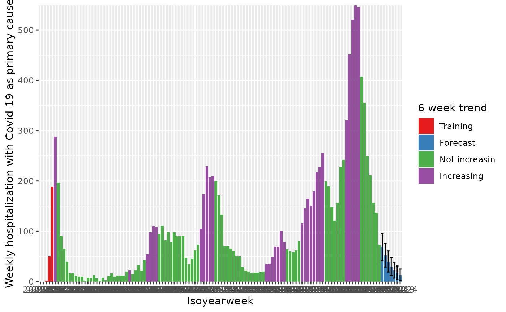
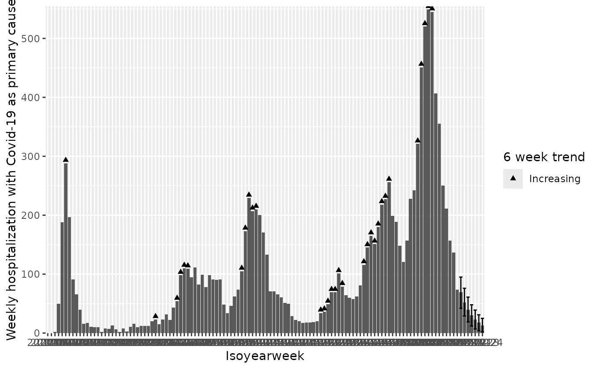
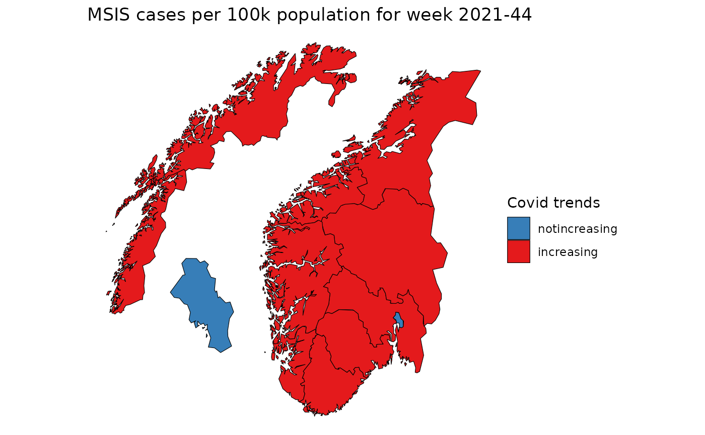

Short term trend
Richard Aubrey White, Chi Zhang
2023-05-31
Source:vignettes/short_term_trend.Rmd
short_term_trend.RmdThis vignette shows how to compute short-term trend signals using
csalert::short_term_trend. Two scenarios are covered: a
single location (Norway) and multiple locations (Norwegian
counties).
library(ggplot2)
library(data.table)
#>
#> Attaching package: 'data.table'
#> The following object is masked from 'package:base':
#>
#> %notin%
library(magrittr)Single location
Covid-19 hospitalisation data
The dataset contains daily and weekly counts of Covid-19 hospitalisations in Norway where Covid-19 was recorded as the primary cause. It does not distinguish between age groups or sex.
This extract was pulled on 2022-05-04 and covers 2020-02-21 to 2022-05-03. The raw data in CSV and XLSX formats are available on the GitHub repository.
Data in cstidy format
The data have been pre-processed into cstidy format, which provides a standardised column structure including data types and missingness information.
d_hosp <- cstidy::nor_covid19_icu_and_hospitalization_csfmt_rts_v1
d_hosp
#> granularity_time granularity_geo country_iso3 location_code border age
#> <char> <char> <char> <char> <int> <char>
#> 1: date nation nor nation_nor 2020 total
#> 2: date nation nor nation_nor 2020 total
#> 3: date nation nor nation_nor 2020 total
#> 4: date nation nor nation_nor 2020 total
#> 5: date nation nor nation_nor 2020 total
#> ---
#> 915: isoyearweek nation nor nation_nor 2020 total
#> 916: isoyearweek nation nor nation_nor 2020 total
#> 917: isoyearweek nation nor nation_nor 2020 total
#> 918: isoyearweek nation nor nation_nor 2020 total
#> 919: isoyearweek nation nor nation_nor 2020 total
#> sex isoyear isoweek isoyearweek season seasonweek calyear calmonth
#> <char> <int> <int> <char> <char> <num> <int> <int>
#> 1: total 2020 8 2020-08 2019/2020 31 2020 2
#> 2: total 2020 8 2020-08 2019/2020 31 2020 2
#> 3: total 2020 8 2020-08 2019/2020 31 2020 2
#> 4: total 2020 9 2020-09 2019/2020 32 2020 2
#> 5: total 2020 9 2020-09 2019/2020 32 2020 2
#> ---
#> 915: total 2022 14 2022-14 <NA> NA NA NA
#> 916: total 2022 15 2022-15 <NA> NA NA NA
#> 917: total 2022 16 2022-16 <NA> NA NA NA
#> 918: total 2022 17 2022-17 <NA> NA NA NA
#> 919: total 2022 18 2022-18 <NA> NA NA NA
#> calyearmonth date icu_with_positive_pcr_n
#> <char> <Date> <int>
#> 1: 2020-M02 2020-02-21 0
#> 2: 2020-M02 2020-02-22 0
#> 3: 2020-M02 2020-02-23 0
#> 4: 2020-M02 2020-02-24 0
#> 5: 2020-M02 2020-02-25 0
#> ---
#> 915: <NA> 2022-04-10 21
#> 916: <NA> 2022-04-17 11
#> 917: <NA> 2022-04-24 17
#> 918: <NA> 2022-05-01 9
#> 919: <NA> 2022-05-08 0
#> hospitalization_with_covid19_as_primary_cause_n
#> <int>
#> 1: 0
#> 2: 0
#> 3: 0
#> 4: 0
#> 5: 0
#> ---
#> 915: 211
#> 916: 157
#> 917: 137
#> 918: 74
#> 919: 10Weekly observations
The short_term_trend function is run on the weekly
subset of the data. The trend_isoyearweeks argument sets
the number of weeks used to estimate the trend, and
remove_last_isoyearweeks trims the most recent weeks to
account for reporting delays.
d_hosp_weekly <- d_hosp[granularity_time=="isoyearweek"]
res <- csalert::short_term_trend(
d_hosp_weekly,
numerator = "hospitalization_with_covid19_as_primary_cause_n",
trend_isoyearweeks = 6,
remove_last_isoyearweeks = 1
)
# create the trend label
res[, hospitalization_with_covid19_as_primary_cause_trend0_41_status := factor(
hospitalization_with_covid19_as_primary_cause_trend0_41_status,
levels = c("training","forecast","notincreasing", "increasing"),
labels = c("Training","Forecast","Not increasin", "Increasing")
)]
colnames(res)
#> [1] "granularity_time"
#> [2] "granularity_geo"
#> [3] "country_iso3"
#> [4] "location_code"
#> [5] "border"
#> [6] "age"
#> [7] "sex"
#> [8] "isoyear"
#> [9] "isoweek"
#> [10] "isoyearweek"
#> [11] "season"
#> [12] "seasonweek"
#> [13] "calyear"
#> [14] "calmonth"
#> [15] "calyearmonth"
#> [16] "date"
#> [17] "icu_with_positive_pcr_n"
#> [18] "hospitalization_with_covid19_as_primary_cause_n"
#> [19] "hospitalization_with_covid19_as_primary_cause_forecasted_n"
#> [20] "hospitalization_with_covid19_as_primary_cause_forecasted_predinterval_q02x5_n"
#> [21] "hospitalization_with_covid19_as_primary_cause_forecasted_predinterval_q97x5_n"
#> [22] "hospitalization_with_covid19_as_primary_cause_forecasted_n_forecast"
#> [23] "hospitalization_with_covid19_as_primary_cause_trend0_41_status"
#> [24] "hospitalization_with_covid19_as_primary_cause_doublingdays0_41"The function adds several new columns to the original data. The example below shows the forecasted counts alongside the trend status.
# check some columns
res[
,
.(
date,
hospitalization_with_covid19_as_primary_cause_n,
hospitalization_with_covid19_as_primary_cause_forecasted_n,
hospitalization_with_covid19_as_primary_cause_trend0_41_status
)
]
#> date hospitalization_with_covid19_as_primary_cause_n
#> <Date> <int>
#> 1: 2020-02-23 0
#> 2: 2020-03-01 0
#> 3: 2020-03-08 2
#> 4: 2020-03-15 50
#> 5: 2020-03-22 188
#> ---
#> 118: 2022-05-22 NA
#> 119: 2022-05-29 NA
#> 120: 2022-06-05 NA
#> 121: 2022-06-12 NA
#> 122: 2022-06-19 NA
#> hospitalization_with_covid19_as_primary_cause_forecasted_n
#> <int>
#> 1: 0
#> 2: 0
#> 3: 2
#> 4: 50
#> 5: 188
#> ---
#> 118: 40
#> 119: 30
#> 120: 23
#> 121: 18
#> 122: 13
#> hospitalization_with_covid19_as_primary_cause_trend0_41_status
#> <fctr>
#> 1: Training
#> 2: Training
#> 3: Training
#> 4: Training
#> 5: Training
#> ---
#> 118: Forecast
#> 119: Forecast
#> 120: Forecast
#> 121: Forecast
#> 122: ForecastVisualising trend status
Trend status can be mapped to bar fill colours, with error bars showing the prediction interval.
q <- ggplot(
res,
aes(
x = isoyearweek,
y = hospitalization_with_covid19_as_primary_cause_forecasted_n,
group = 1
)
)
q <- q + geom_col(mapping = aes(fill = hospitalization_with_covid19_as_primary_cause_trend0_41_status))
q <- q + geom_errorbar(
mapping = aes(
ymin = hospitalization_with_covid19_as_primary_cause_forecasted_predinterval_q02x5_n,
ymax = hospitalization_with_covid19_as_primary_cause_forecasted_predinterval_q97x5_n
)
)
q <- q + scale_y_continuous("Weekly hospitalization with Covid-19 as primary cause", expand = c(0, 0.1))
q <- q + scale_x_discrete("Isoyearweek")
q <- q + expand_limits(y=0)
q <- q + scale_fill_brewer("6 week trend", palette = "Set1")
q
Point shapes can be used instead, placing a symbol above each bar to mark the trend category.
shape_adjustment_factor <- max(res$hospitalization_with_covid19_as_primary_cause_forecasted_n)*0.01
q <- ggplot(
res,
aes(
x = isoyearweek,
y = hospitalization_with_covid19_as_primary_cause_forecasted_n,
group = 1
)
)
q <- q + geom_col()
q <- q + geom_point(mapping = aes(
y = hospitalization_with_covid19_as_primary_cause_forecasted_n + shape_adjustment_factor,
shape = hospitalization_with_covid19_as_primary_cause_trend0_41_status
))
q <- q + geom_errorbar(
mapping = aes(
ymin = hospitalization_with_covid19_as_primary_cause_forecasted_predinterval_q02x5_n,
ymax = hospitalization_with_covid19_as_primary_cause_forecasted_predinterval_q97x5_n
)
)
q <- q + scale_y_continuous("Weekly hospitalization with Covid-19 as primary cause", expand = c(0, 0.1))
q <- q + scale_x_discrete("Isoyearweek")
q <- q + expand_limits(y=0)
q <- q + scale_shape_manual("6 week trend", values = c("Increasing" = 17, "Decreasing" = 6))
q
#> Warning: Removed 91 rows containing missing values or values outside the scale range
#> (`geom_point()`).
Multiple locations
When the data contain multiple locations,
short_term_trend computes the trend for each one. Here the
function is applied to weekly Covid-19 case counts at county level.
d <- cstidy::nor_covid19_cases_by_time_location_csfmt_rts_v1[
granularity_time == "isoyearweek" &
granularity_geo == "county"
]
trend <- csalert::short_term_trend(
d,
numerator = "covid19_cases_testdate_n",
trend_isoyearweeks = 6,
remove_last_isoyearweeks = 1
)
print(trend)
#> granularity_time granularity_geo country_iso3 location_code border age
#> <char> <char> <char> <char> <int> <char>
#> 1: isoyearweek county nor county_nor03 2020 total
#> 2: isoyearweek county nor county_nor03 2020 total
#> 3: isoyearweek county nor county_nor03 2020 total
#> 4: isoyearweek county nor county_nor03 2020 total
#> 5: isoyearweek county nor county_nor03 2020 total
#> ---
#> 1338: isoyearweek county nor county_nor54 2020 total
#> 1339: isoyearweek county nor county_nor54 2020 total
#> 1340: isoyearweek county nor county_nor54 2020 total
#> 1341: isoyearweek county nor county_nor54 2020 total
#> 1342: isoyearweek county nor county_nor54 2020 total
#> sex isoyear isoweek isoyearweek season seasonweek calyear calmonth
#> <char> <int> <int> <char> <char> <num> <int> <int>
#> 1: total 2020 8 2020-08 2019/2020 31 NA NA
#> 2: total 2020 9 2020-09 2019/2020 32 NA NA
#> 3: total 2020 10 2020-10 2019/2020 33 NA NA
#> 4: total 2020 11 2020-11 2019/2020 34 NA NA
#> 5: total 2020 12 2020-12 2019/2020 35 NA NA
#> ---
#> 1338: total 2022 20 2022-20 2021/2022 43 NA NA
#> 1339: total 2022 21 2022-21 2021/2022 44 NA NA
#> 1340: total 2022 22 2022-22 2021/2022 45 NA NA
#> 1341: total 2022 23 2022-23 2021/2022 46 NA NA
#> 1342: total 2022 24 2022-24 2021/2022 47 NA NA
#> calyearmonth date covid19_cases_testdate_n
#> <char> <Date> <int>
#> 1: <NA> 2020-02-23 0
#> 2: <NA> 2020-03-01 7
#> 3: <NA> 2020-03-08 39
#> 4: <NA> 2020-03-15 276
#> 5: <NA> 2020-03-22 366
#> ---
#> 1338: <NA> 2022-05-22 NA
#> 1339: <NA> 2022-05-29 NA
#> 1340: <NA> 2022-06-05 NA
#> 1341: <NA> 2022-06-12 NA
#> 1342: <NA> 2022-06-19 NA
#> covid19_cases_testdate_pr100000 covid19_cases_testdate_forecasted_n
#> <num> <int>
#> 1: 0.000000 0
#> 2: 1.009381 7
#> 3: 5.623697 39
#> 4: 39.798470 276
#> 5: 52.776232 366
#> ---
#> 1338: NA 12
#> 1339: NA 7
#> 1340: NA 4
#> 1341: NA 3
#> 1342: NA 2
#> covid19_cases_testdate_forecasted_predinterval_q02x5_n
#> <num>
#> 1: NA
#> 2: NA
#> 3: NA
#> 4: NA
#> 5: NA
#> ---
#> 1338: -9
#> 1339: -9
#> 1340: -8
#> 1341: -7
#> 1342: -6
#> covid19_cases_testdate_forecasted_predinterval_q97x5_n
#> <num>
#> 1: NA
#> 2: NA
#> 3: NA
#> 4: NA
#> 5: NA
#> ---
#> 1338: 34
#> 1339: 24
#> 1340: 17
#> 1341: 12
#> 1342: 9
#> covid19_cases_testdate_forecasted_n_forecast
#> <lgcl>
#> 1: FALSE
#> 2: FALSE
#> 3: FALSE
#> 4: FALSE
#> 5: FALSE
#> ---
#> 1338: TRUE
#> 1339: TRUE
#> 1340: TRUE
#> 1341: TRUE
#> 1342: TRUE
#> covid19_cases_testdate_trend0_41_status
#> <fctr>
#> 1: training
#> 2: training
#> 3: training
#> 4: training
#> 5: training
#> ---
#> 1338: forecast
#> 1339: forecast
#> 1340: forecast
#> 1341: forecast
#> 1342: forecast
#> covid19_cases_testdate_doublingdays0_41
#> <num>
#> 1: NA
#> 2: NA
#> 3: NA
#> 4: NA
#> 5: NA
#> ---
#> 1338: NA
#> 1339: NA
#> 1340: NA
#> 1341: NA
#> 1342: NAMapping trend status
The trend status for a single week can be joined to a county map polygon dataset and plotted geographically.
pd <- copy(csmaps::nor_county_map_b2020_split_dt)
pd[
trend[isoyearweek == "2021-44"],
on = c("location_code"),
covid19_cases_testdate_trend0_41_status := covid19_cases_testdate_trend0_41_status
]
# plot map
q <- ggplot()
q <- q + geom_polygon(
data = pd,
mapping = aes(x = long, y = lat, group = group,fill=covid19_cases_testdate_trend0_41_status),
color="black",
linewidth = 0.2
)
q <- q + coord_quickmap()
q <- q + theme_void()
q <- q + labs(title="MSIS cases per 100k population for week 2021-44")
q <- q + scale_fill_brewer("Covid trends", palette = "Set1", direction = -1)
q